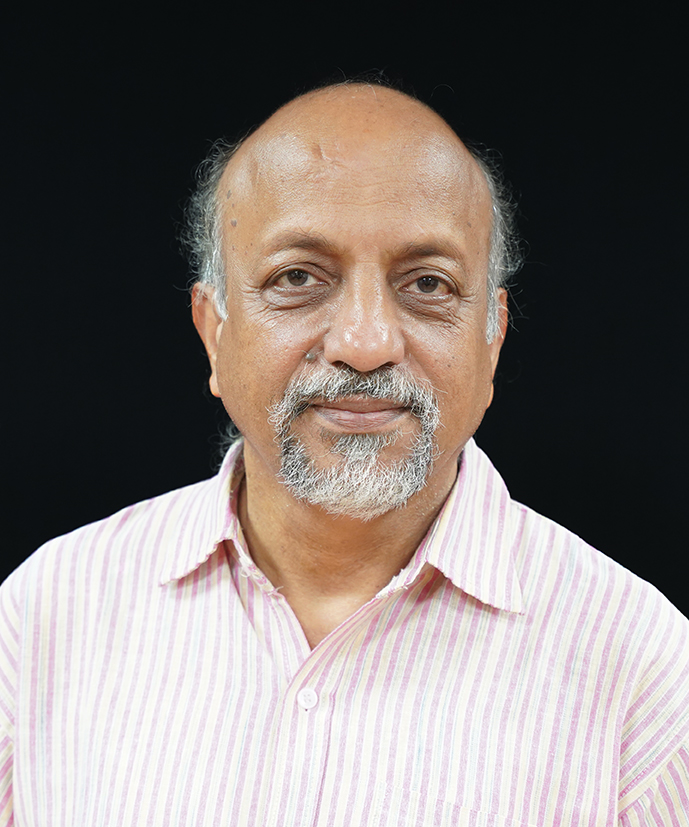

Chancellor
SHRI VINAI KUMAR SAXENA
Shri Vinai Kumar Saxena is 22nd Hon’ble Lieutenant Governor of Delhi. He has served as Chairman of Khadi and Village Industries Commission, an Organization under the Ministry of Medium, Small and Micro Enterprise.
Vice chancellor
PROF. (Dr.) ASHOK KUMAR NAGAWAT
Prof. Ashok Kumar Nagawat has joined as Vice Chancellor of Netaji Subhas University of Technology as an additional charge. He is VC of DSEU, Delhi. He is a theoretical physicist with a keen interest in all branches of STEM. He has an excellent academic record, from school to masters.
Director West Campus
PROF. PRERNA GAUR
B.Tech in Electrical Engineering (1988), M.Tech (1996 ) with distinction and Ph.D. (2009) in the field of Artificial Intelligence and control. Presently, Director, NSUT, West Campus. Professor( since 2015) & founder Campus Director( Jan-2021-till date), Head in Instrumentation and Control and Electrical Engineering Department in NSUT (2018-2020). Six years of Industry experience and 28 years of Teaching experience in Delhi College Engineering and NSUT, Delhi.
Director East Campus
PROF. NARENDRA KUMAR

B. E. in Electrical Engineering from IIT-Roorkee (Erstwhile UOR-Roorkee) in 1985, M.E. from Punjab Engineering College in 1987 and Ph.D. from Delhi Technological University (Erstwhile Delhi College of Engineering) in the field of Electronic Instrumentation and Control in 2003. Presently working as Director, NSUT, East Campus.